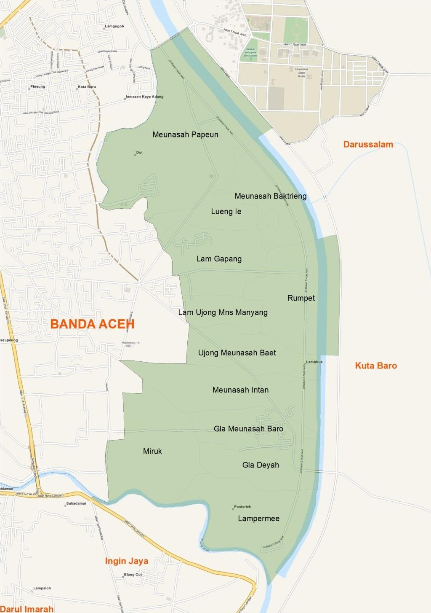

Krueng Barona Jaya merupakan salah satu kecamatan yang berada diwilayah kabupaten Aceh Besar Provinsi Aceh ,yaitu merupakan hasil pemekaran dari kecamatan induk yaitu kecamatan Ingin Jaya pada tahun 2001.
Lokasi Kecamatan
Peta Kecamatan

Letak Geografis
Nama Kecamatan : Krueng Barona Jaya
Ibukota Kecamatan : Cot Iri
Kabupaten : Aceh Besar
Provinsi : Aceh
Luas Kecamatan : 6,96 Km2 (696 Ha)
Jumlah Kemukiman : 3 Mukim
Jumlah Gampong : 12 Gampong
Batas Kecamatan
Sebelah Utara : Kecamatan Syiah Kuala Kota Banda Aceh
Sebelah Selatan : Kecamatan Ingin Jaya
Sebelah Barat : Kecamatan Ulee Kareng Kota Banda Aceh
Sebelah Timur : Kecamatan Darussalam dan,
Kecamatan Kuta Baro